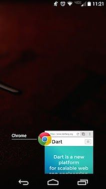
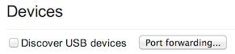
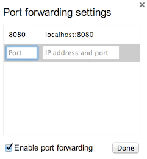
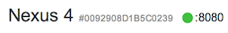
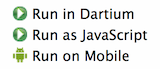
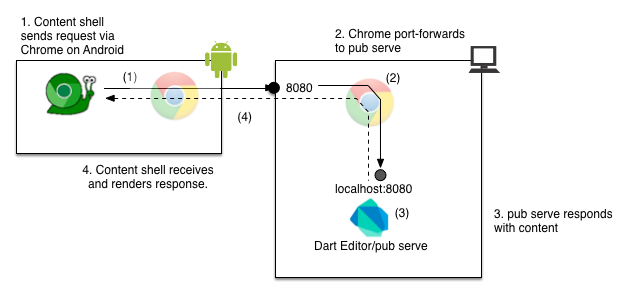
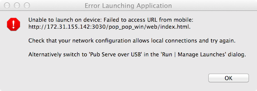
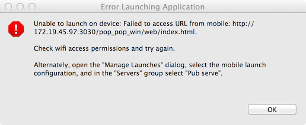

You can launch and debug your web app on an Android device without first compiling to JavaScript. To do so, you need Dart Editor and an app called Dart Content Shell, which Dart Editor automatically installs on the Android device. You can also set breakpoints in Dart Editor to debug your app running in Dart Content Shell on Android, just as you would for any other Dart app.
To configure your environment for mobile development, you first need:
For a more complete description of the requirements, see Remote Debugging on Android with Chrome.
Download Dart Editor, which comes bundled with the Android Debug Bridge (adb) and Dart Content Shell for Android.
Enable USB debugging on the device, as described in Step 1 of Set up remote debugging. (Return to this document after Step 1.)
Physically connect your Android device to your computer, using the USB cable. Grant permission for USB debugging on the device, as described in Step 3 of Connect your device via USB. (Return to this document after Step 3.)
Unless you are using a home network, you probably need to set up port forwarding. If you are wondering what port forwarding is, see What is port forwarding and why might I need it?
Check that the Recent Apps screen on your Android device shows that Chrome is running:

To set up port forwarding:
Launch Chrome on your computer and navigate to chrome://inspect/#devices.
You should see the following:

Check the Discover USB devices box.
Click the Port forwarding… button to bring up the Port forwarding settings dialog.
If you don’t already see 8080 in the dialog, enter 8080 for the port,
and localhost:8080 for the IP address and port.
Press Enter to add this port to the list.
Make sure the Enable port forwarding box is checked. The dialog should now look like the following:

Click Done.
Next to the name of the device, you should now see port 8080 listed:

If the green dot and port number are absent, then Chrome on your Android device cannot communicate with Chrome on your computer. Make sure that Chrome is running on the Android device.
The simplest way to test an app on your Android device is to right-click the HTML file in Dart Editor to bring up the following context menu:

Click Run on Mobile.
Status is displayed in Dart Editor. After a moment, you should see the app running in Dart Content Shell on the device.
Most of the time, this just works. If not, see Problems?.
When your app is running on the Android device, you can set breakpoints in Dart Editor just as you would to debug any Dart app.
You can debug the app if you see a “Remote” connection in the debugger view (Tools > Debugger). If the debugger view shows that remote is terminated, relaunch the app.
Here are some frequently asked questions about running Dart web apps in the content shell on Android:
On the first mobile launch of each Dart Editor session, two apps are downloaded to your Android device:
The Dart Content Shell, a streamlined version of Chromium that includes the Dart VM. During testing, your app runs in the content shell.
A small connection test app, designed to detect problems accessing the web server. If any problems are detected, this app communicates back to Dart Editor.
Unless you are working on a home network, you probably need port forwarding.
Port forwarding is a communication mechanism that translates an address (or port number) to a new destination. It is required when your computer is behind a firewall, or your computer and your Android device are not on the same WiFi network, or you are connected to a public WiFi hotspot that does not allow cross device local communication.
The following diagram shows how port forwarding works. The Dart Content Shell, a streamlined version of Chromium that includes the Dart VM, issues a request. Chrome (running an Android) forwards the request to Chrome (running on your computer), which forwards the request to port 8080. pub serve is listening to port 8080, and responds with content. This response is returned to Chrome on Android, which passes the information to Dart Content Shell. The content shell renders the response.

If you choose to configure your mobile launch manually in the Manage Launches dialog, you will see a pull down menu in the Server box. This menu provides two options:
Pub serve over USB and set up port forwarding.
Most developers will use this option.If you are using port forwarding, make sure that Chrome is running on both devices while testing your app. You set up port forwarding in Chrome because Chrome is passing the packets between the devices.
If you have followed the steps and Dart Editor still cannot see your Android device (reporting the message “No mobile found or USB development not enabled on mobile”), try unplugging and plugging in the device again.
If you see one of the following dialogs in Dart Editor, follow the directions to address the problem. (The first dialog appears when an “Embedded server over WiFi network” launch fails, and the second dialog appears when a “Pub serve over USB” launch fails.)

